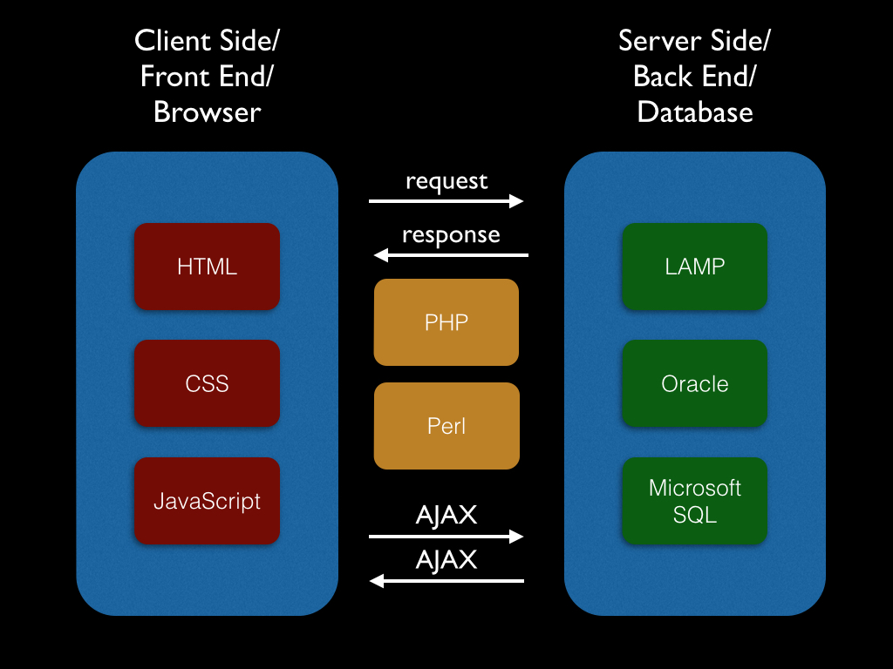

The Web
Front end vs Back end
In het kader van client-server model is er een architectuur scheiding, te weten: front end en back end
→ zie:
Wikipedia
A rule of thumb
The client-side (or "front end") is any component manipulated by the user
The server-side (or "back end") code usually resides on the server, often far removed physically from the user (cloud)
- In software engineering
-
De termen front-end en back-end verwijzen naar de scheiding tussen de presentatielaag (front-end) en de data access laag (back-end) van een stuk software, of de fysieke infrastructuur of hardware. In het client server model wordt de client (het gedeelte waarmee gebruiker interacteert) meestal als de front-end beschouwd en wordt de server meestal als de back-end beschouwd, zelfs als er wat presentatiewerk op de server zelf wordt uitgevoerd.
- In software architecture
-
Er kunnen veel lagen zijn tussen de hardware en de eindgebruiker. Van elk kan worden gezegd dat het een voorkant en een achterkant heeft. De voorkant is een abstractie, die de onderliggende component vereenvoudigt door een gebruiksvriendelijke interface te bieden, terwijl de achterkant meestal zorgt voor bedrijfslogica en gegevensopslag.
- Hybride
-
Voor o.a. performance verbetering is de R&D-trend richting hybride Apps, waarbij de back end functionaliteit deels op het front end apparaat “native” functioneert, bijv. lichtgewicht database met data op front end hardware. Maar ook andersom waarbij de front end functionaliteit wordt gegenereerd op de back end, bijv. serverside opmaak van complexe website-pagina die dan als één geheel naar front end presentatie gaat.